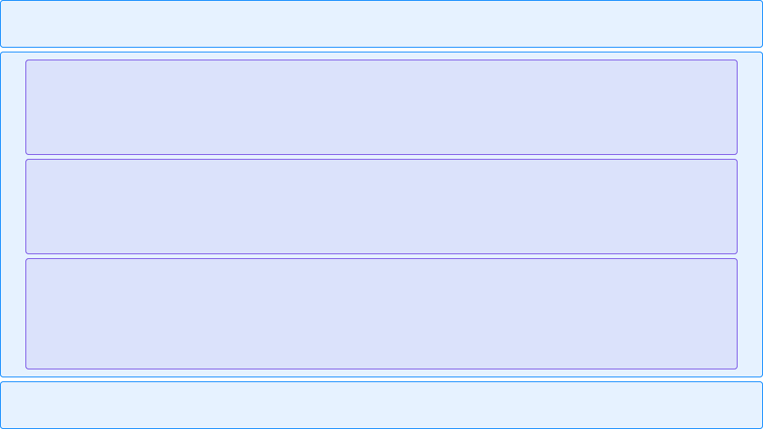
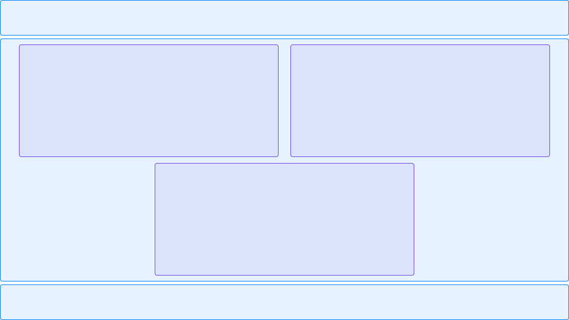

Сетки страниц
и поток документа
27 Ноября, 2024
Лекция в HTML Academy про сетки страниц
Сеткой или раскладкой обычно обозначают структуру взаимного расположения крупных визуальных блоков на странице.
Представим, что макет мысленно разбивается на не пересекающиеся прямоугольники.
Сначала выделяются самые большие области, затем эти области делятся на более мелкие, и так далее, пока не будут выделены самые маленькие прямоугольники, которые обозначают отдельные слова или элементы.
В итоге вся страница будет выглядеть как набор вложенных друг в друга прямоугольников, начиная от самых крупных и заканчивая самыми мелкими.
Фактически, верстка сетки сайта подразумевает организацию порядка и расположения этих прямоугольников относительно друг друга и границ экрана. В CSS существует несколько методов создания таких сеток, каждый из которых имеет свои преимущества и недостатки.
Прежде чем приступить к построению сеток, необходимо разобраться с понятием потока документа.
Поток документа
Поток документа определяет, как элементы отображаются на веб-странице и как этот порядок отображения соотносится с HTML-кодом.
Отображение данного кода на странице:
Все элементы располагаются в том же порядке, в котором они присутствуют в коде.
В потоке документа теги взаимодействуют друг с другом, причем каждый последующий тег учитывает предыдущий (но не наоборот). Теги отталкивают друг друга. Если элемент, расположенный выше, увеличить по высоте, он сместит все нижележащие элементы.
Управление потоком осуществляется с помощью различных CSS-свойств, позволяющих изменять размеры элементов или даже менять направление потока.
Рассмотрим другой вариант потока для той же разметки. Поток идёт как обычно сверху вниз, затем "поворачивает" слева направо, и снова идет вниз:
Те же элементы кода, но в другом представлении с 3 колонками:
Хотя исходный HTML-код не менялся, было создано три различных варианта потока.
Управление потоком
Для управления потоком доступны две группы CSS-свойств.
Хотя разделение условно, можно сказать, что первая группа изменяет поведение элементов в потоке, а вторая группа свойств регулирует размеры самих элементов.
К первой группе относятся свойства 'display' и 'float'.
Во вторую группу входят свойства 'width', 'height', 'margin', 'padding', 'border' и 'box-sizing'.